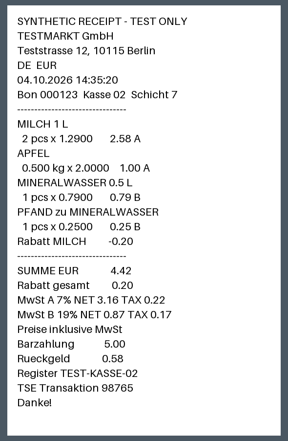
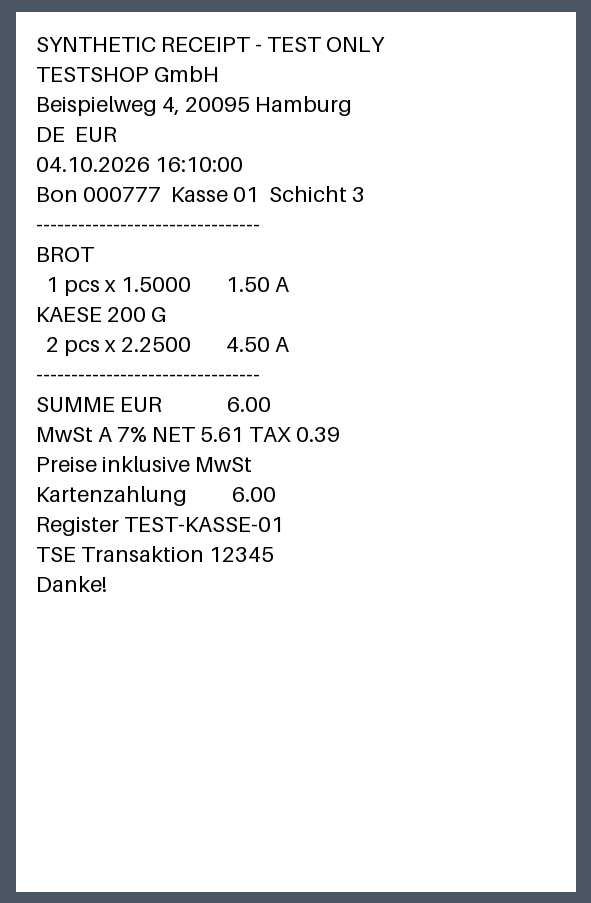

После подтверждения: найден сохранённый чек
Вырезки чеков (2)
Чек 1 · Найден существующий чек

Подтверждено вручную:
Чек уже был сохранён раньше: вырезка привязана к нему. Заполненные значения этого чека не изменены — исправления к ним не применены. Расхождения перечислены в замечаниях.
Открыть чек №1Чек 2 · Найден существующий чек

Подтверждено вручную:
Чек уже был сохранён раньше: вырезка привязана к нему. Заполненные значения этого чека не изменены — исправления к ним не применены. Расхождения перечислены в замечаниях.
Открыть чек №2Замечания распознавания
Строка отличается от сохранённой · Строки
Строки: 1